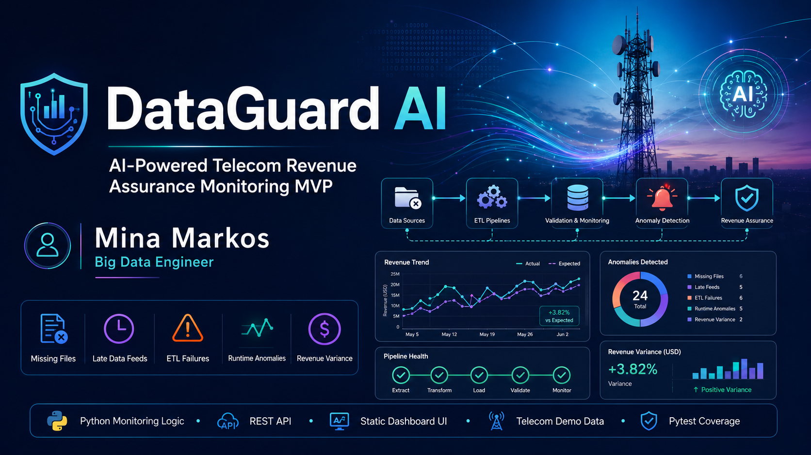

Data Engineering
DataGuard-AI — Telecom Reliability Monitoring
Classify feed and ETL health, generate owned alerts, and show transparent estimated revenue exposure beside operational evidence.
Seeded monitoring MVP; not production SaaS
Python · HTTP API · JavaScript · Rule-based monitoring
Executive Summary
Missing feeds, late batches and revenue variance can leave telecom teams acting on incomplete information. Classify feed and ETL health, generate owned alerts, and show transparent estimated revenue exposure beside operational evidence.
Business Context
The target users are telecom data engineering and revenue-assurance teams. A clear alert owner and expected file arrival time make an issue actionable. The reviewed MVP demonstrates this interaction with seeded data, not a live billing feed.
Technical Architecture
- Seed feed, job and revenue records + fixed scenario clock
- Rule-based classification / runtime thresholds / historical revenue baseline
- Alerts + estimated impact in process memory
- Python ThreadingHTTPServer JSON routes → static dashboard
- Owners and recommended next checks accompany alerts; no implemented ML/LLM layer
Engineering Challenges
An estimate of exposure is not booked revenue loss. Late and missing feeds require different reasoning, and incident duplication can inflate totals. Static scenario time makes the demo deterministic but cannot serve as continuous production monitoring.
Architecture Decisions
The actual API uses Python standard-library ThreadingHTTPServer and dataclasses, not FastAPI despite the CV technology label. monitoring.py contains explicit rules rather than an AI model. This keeps the demo inspectable. A durable API framework, scheduler and database are future options, not implemented architecture.
Implementation
api.py creates seeded feed/job/metric lists at import, maps GET endpoints, serializes dashboard objects and serves web/. monitoring.py evaluates arrival deadlines, runtime deviations and revenue baselines. The impact calculation prorates and caps an average daily revenue input; alert IDs are generated in memory.
Reliability and Security
No authenticated multi-tenant production service, durable alert lifecycle, live ingestion connector or resilient scheduler is established by the reviewed code. Treat the API as a local MVP. A production design needs identity, persistence, deduplication, audit, retention and freshness checks.
Business Value
Expected value: prioritize feed investigation and make assumptions about exposure visible. All revenue-at-risk values shown by the MVP are scenario-based estimates, not measured revenue saved. No reduced leakage or availability KPI is asserted.
Evidence and validation boundary
Status: Seeded monitoring MVP; not production SaaS. Reviewed 22 November 2026.
Reviewed repository revision: d76cbf63295f. Code presence is distinct from executed runtime behavior.
- src/dataguard_ai/api.py
- src/dataguard_ai/monitoring.py
- src/dataguard_ai/seed.py
- tests/test_monitoring.py
- docs/product-plan.md
Current local test outcomes and unexecuted checks. CI and test evidence is separated from production readiness; the validation record includes retrieved checks at the reviewed revision.
Remote check runs returned for this revision: none; no CI success is inferred.

Future Improvements
Add durable event/alert storage, replace the fixed seed clock with controlled ingestion, validate impact estimates with revenue owners, and evaluate authentication and duplicate-alert behavior before any SaaS claim.